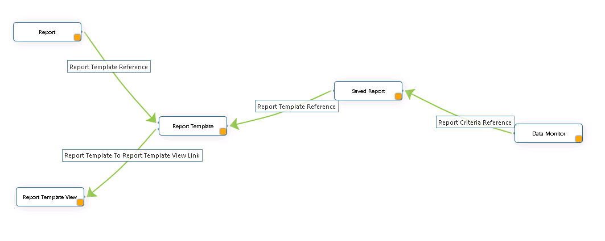

Reporting QueryBuilder Model

- ReportTemplate
- This class implements a template for report queries. It contains a query XML attribute that stores the definition of a report query.
This class is an administrative template accessed throught the Utilities tab and is typically used by users in a report author role.
- SavedReport (ReportCriteria)
- This class is used to persistently store the saved criteria for a report. These are the selections, operators, and values entered on the
ReportBuilder user interface. Each instance is associated to a ReportTemplate. This is the ReportTemplate that the saved input criteria are applicable to.
Instances of this class are accessed by all end users through the Reports tab.
- ReportTemplate to ReportTemplate View Link
- This link class maintains the association between a ReportTemplate and a ReportTemplate view that it references in its report definition QML. The source role
references the ReportTemplate that contains a ReportView in its QML. The target role references the ReportTemplate that is used as a ReportTemplate View.
- Report
- This class represents an executable report. This can mean an internal Info*Engine report task, a ReportTemplate, or a report in an external reporting system.
If the report represents the execution of a ReportTemplate, then it will have a valid reference to a ReportTemplate. Instances of this class are accessed by
all end users through the Reports tab.
- Data Monitor
- This class represents the configuration of a periodic execution of a report. The execution result data is monitored and can trigger notifications based on
a threshold value. Each instance is associated with a Saved Report (Report Criteria) that holds the input selections and criteria values along with a reference to
the ReportTemplate for execution. Instances of this class are accessed by all end users through the Reports tab.